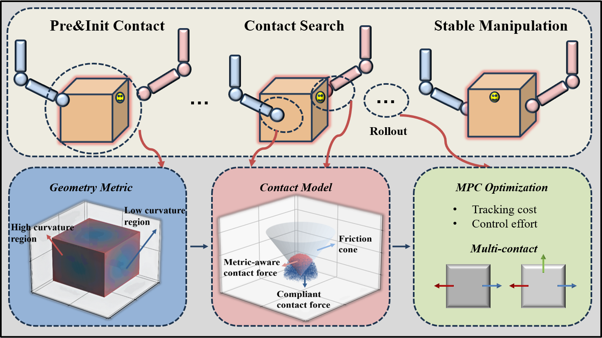
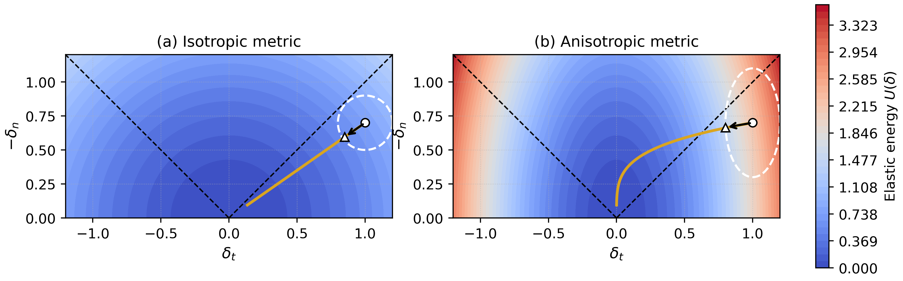
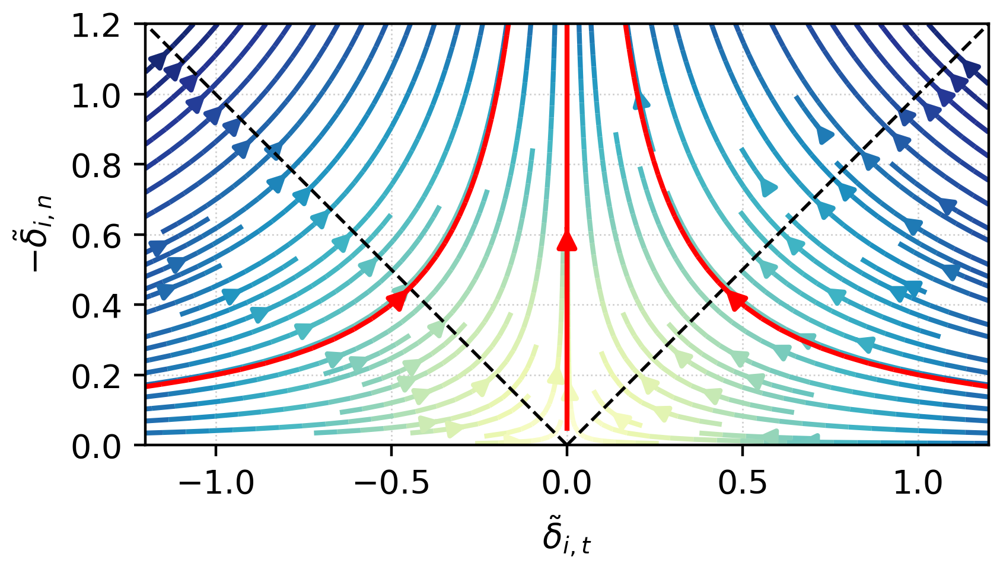
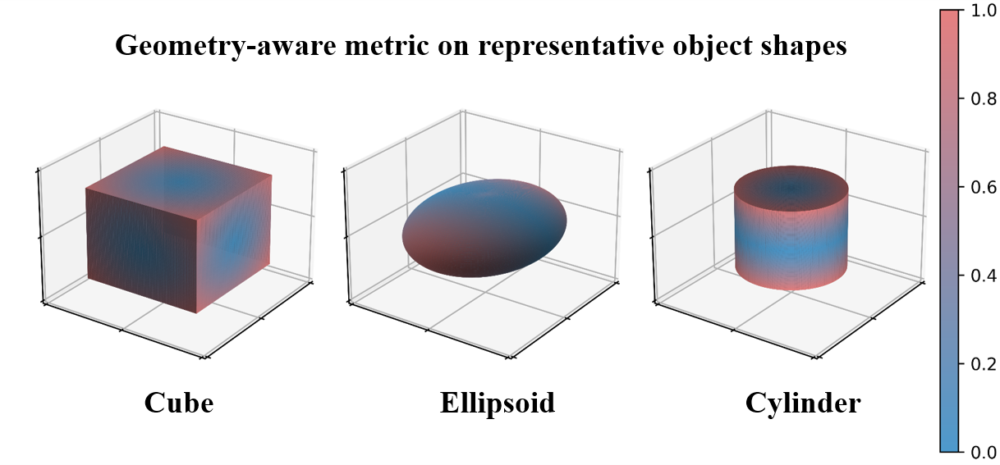
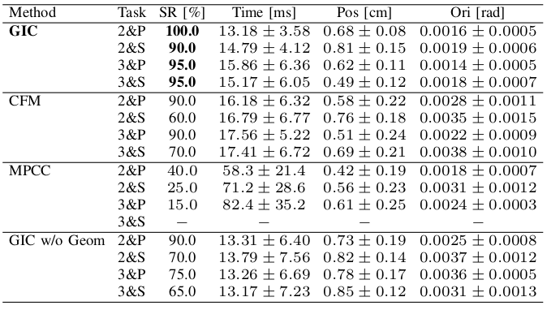
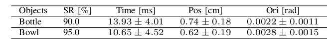

Contact-rich manipulation remains a paramount challenge in robotics due to the hybrid dynamics and nonsmooth nature of making and breaking contacts. We present a geometry-informed contact (GIC) modeling and optimization approach that encodes the friction-cone geometry and object geometry directly within an energy-consistent compliant contact model.
At each contact, an anisotropic Riemannian metric shapes the contact energy so that the resulting compliant force is geometrically consistent with the friction cone, while a geometry-aware modulation biases contacts toward mechanically robust regions. This yields smooth, complementarity-free contact dynamics, enabling an efficient contact-implicit MPC formulation for contact-rich manipulation.
The proposed GIC and MPC formulation is evaluated on several dexterous manipulation tasks with diverse contact numbers, initial configurations, and task dimensionality in both simulation and real-world experiments, achieving higher success rates and lower pose errors with less computation time.

A dual-arm robot performs initial contact, contact search, and stable manipulation on an object. A geometry-aware metric highlights favorable surface regions, a geometry-informed energy-consistent contact model generates compliant contact forces, and an MPC controller optimizes tracking and control effort for efficient multi-contact manipulation.
The framework has three tightly coupled components:
We choose the anisotropic metric so that the energy ellipsoid's tangential-to-normal axis ratio exactly matches the Coulomb coefficient μ. This makes the compliant force cone-consistent by construction, without any explicit friction-cone inequality.

Elastic energy and gradient flow in displacement space. Top: isotropic metric—circular level sets that ignore the friction cone. Bottom: anisotropic metric—energy ellipses align with the cone, pulling iterates toward cone-consistent directions.

Metric-normalized elastic force streamlines. After the metric transformation, the Coulomb cone becomes a unit cone (dashed lines), and contact forces naturally remain inside it.
A curvature-dependent modulation further biases contact selection toward gently curved regions. Edges and corners concentrate stress and are sensitive to pose error; flatter regions are more robust. This is a modeling choice that regularizes the MPC optimization—the physical friction coefficient μ remains uniform across the surface.

Geometry-aware metric visualized on three canonical shapes (cube, ellipsoid, cylinder). Blue = low geometric penalty (preferred for stable contact); red = high penalty (sharp edges and highly curved regions, discouraged).
We first evaluate GIC on a wooden cube under diverse contact numbers and task dimensionality, using identical controller parameters throughout (μ = 0.5, Δt = 0.1 s, prediction horizon K = 10). Planar tasks (2&P, 3&P) require a single rotation about the vertical axis; spatial tasks (2&S, 3&S) additionally require lift and tilt.
Planar reorientation about the vertical axis with two contacts.
Spatial reorientation with out-of-plane motion and two contacts.
Over-actuated planar reorientation with three contacts.
Spatial reorientation requiring lift and tilt with three contacts.

Table I. Performance comparison on multi-contact manipulation tasks. SR: success rate. Time: average MPC solve time. Pos and Ori: terminal errors.
GIC achieves 100% success on 2&P and 90–95% on the remaining tasks, with terminal position errors below 0.85 cm and orientation errors on the order of 0.001 rad, all within 13–16 ms of MPC solve time. MPCC suffers from solver timeout on spatial tasks (success below 40%), while CFM degrades notably on spatial cases (60% on 2&S, 70% on 3&S). The w/o Geom ablation shows that curvature guidance is most critical when the contact count is limited.
We next test how the geometry-aware metric transfers across object shapes. The same GIC and MPC pipeline extends directly to new objects without additional tuning—only the body-frame geometric metric is updated based on a simple primitive approximation (cylinder for the plastic bottle, oblate ellipsoid for the metal bowl).
Planar two-contact manipulation of a plastic bottle and a metal bowl. The controller places contacts on the cylindrical body and the outer wall, avoiding the high-curvature shoulder and rim highlighted by the geometry-aware metric.

Table II. Performance on the two object-variation tasks over 20 randomized trials each.
GIC achieves 90% success on the bottle and 95% on the bowl, with terminal position errors around 0.7 cm and orientation errors below 0.003 rad, while maintaining MPC solving times below 14 ms on average. Qualitatively, the controller avoids the high-curvature shoulder of the bottle and the rim of the bowl, confirming that once the geometric metric is defined from a simple primitive, the pipeline transfers to new objects without retuning.
We deploy GIC-MPC on an ARX R5 dual-arm robot manipulating a cardboard box on a table. Each parallel-jaw gripper (closed) acts as a single point contact on a box face. The MPC runs at 10 Hz with the same prediction horizon and cost structure as in simulation. We evaluate two task families that mirror the simulation study: planar pushing and rotation (2&P), and spatial flipping (2&S).
The arms push and rotate the box to a target pose in the plane under two distinct initial contact configurations—both grippers on the same face, and grippers on adjacent faces. The friction- and curvature-aware metric pulls the controller away from edges and corners toward broader, mechanically robust patches on the face, yielding reliable rotation without any explicit contact-switching heuristic.
Both grippers contact the same side face of the box.
Grippers on adjacent faces, giving asymmetric wrench authority.
The arms flip the box about a horizontal axis. To rotate the box out of plane, each contact must simultaneously support the weight against gravity and provide tangential force along the pitch axis, operating close to the friction-cone boundary on the lateral faces. Here the cone-alignment built into the friction metric matters most directly: the anisotropic metric keeps the optimized forces inside the admissible region throughout the maneuver, while the curvature modulation continues to draw contacts away from the edges as the orientation evolves.
Out-of-plane flipping with two contacts on the lateral faces. The compliant contact forces remain cone-consistent throughout the spatial reorientation.
Across all 2&P and 2&S trials, the arms maintain stable multi-contact interaction and reach the target pose with terminal position error < 1.5 cm and orientation error < 0.01 rad. The proposed GIC-MPC thus transfers from simulation to hardware and handles both planar pushing and spatial reorientation under varying multi-contact configurations.
@article{gic_anonymous_2026,
title = {Geometry-Informed Contact Modeling and Optimization
for Efficient Contact-Rich Manipulation},
author = {Anonymous Authors},
journal = {Under review at IEEE Robotics and Automation Letters},
year = {2026}
}The BibTeX entry will be updated once the paper is accepted.